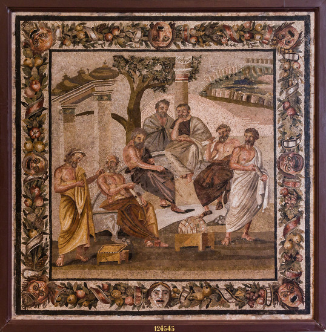

Quelle représentation du monde pour les contemporains de Cicéron ?
Après que César eut franchi le Rubicon (en janvier 49), Cicéron quitta Rome avec les autres sénateurs et se rendit dans son domaine à Formies, aux environs de Capoue , où Nigidius vint le voir (Cic, Ad Att., VII, 23).
Une mosaïque a été retrouvée à quelques kilomètres, dans les fouilles archéologiques de Pompéi, dans la villa de Titus Siminius Stephanus, à Torre Annunziata, près du port. Elle date approximativement de la fin du IIème av. J.C. : dénommée L'Académie de Platon, Mosaïque des philosophes, ou Mosaïque des Sept Sages, elle a un thème original, ce qui laisse présumer qu'il s'agit d'une commande d'un Romain féru de philosophie. Comme on sait par ailleurs que Cicéron avait en bas de Pompéi une maison de campagne qu’il aimait beaucoup, on peut imaginer que, amateur lui-même de mosaïques, il y ait posé son pied, et trouver son inspiration pour sa relecture du Timée.
La place de la sphère+ - au centre de la scène - signifie que l'objet du débat porte sur l'origine du monde, comme dans le Timaeus.

Konrad Gaiser(BALTY Jean-Charles, 1984) a proposé une analyse de cette mosaïque :
La montagne visible à l’arrière-plan de la scène, et portant des constructions, serait une représentation idéalisée de l’Acropole d’Athènes (la colline, le Parthenon, la montée de la Voie Sacrée, et peut-être le théâtre de Dionysos). La discussion semble donc se dérouler à l’extérieur de la cité, έξω τείχους, selon l’expression du Phèdre (227 a).
-
La sphère+ visible au centre de l’image - l’objet de la discussion - est une sphère céleste a un pourtour+, marqué par un réseau de cercles entrecroisés dont il est possible de donner une interprétation 1.
-
Nous assistons à un entretien sur l’astronomie.
- Des hypothèses ont été proposées pour identifier les personnages, de gauche à droite :
Héraclide du Pont (le conférencier) Speusippe, Platon (qui montre la sphère), un auditeur anonyme, Eudoxe de Cnide (sous le cadran solaire), Xénocrate et Aristote. Héraclide semble parler des mouvements relatifs du ciel et de la terre, question qui était fréquemment débattue au sein de l’Académie.
{kind=link}